Cem usuários ativos foram sorteados em user_account no Postgres do admin-core, cada um com a própria unidade. Cada usuário manteve uma conversa, com espera de 12 a 35 segundos entre mensagens, e no máximo cinco chamadas ao mesmo tempo. Os turnos alternaram FAQ, inventário, predição de falha e relatório. O log do pod está em script/log (2).log.
Antes dessa janela, às 08:27, houve 38 chamadas recusadas com HTTP 403. O admin-core respondeu 401 (token ainda sem assinatura) e o serviço não resolveu a unidade. Esses 38 pedidos ficam de fora dos números abaixo.
Contagem no log do serviço, só a janela das 08:31 às 08:38:
| Resultado | Turnos | Fatia |
|---|---|---|
| HTTP 200 (turno concluído) | 223 | 90,3% |
| HTTP 500 | 24 | 9,7% |
| Total | 247 | 100% |
Os 24 erros 500 são o mesmo incidente: o MCP de inventário em /qa/inventory/mcp respondeu 429 Too Many Requests. O índice de erro do serviço nessa carga é 9,7%. Não houve 401 nem 403 nessa janela.
O judge quase não devolveu o turno: o log registra 3 retries (resposta de cotação/descarte no lugar do histórico de predição). Isso não aparece como erro HTTP.
No LangSmith a taxa de erro do trace fica em zero até 08:32, sobe para cerca de 20% às 08:33, chega a cerca de 25% às 08:35 e volta a zero às 08:37. O AI Studio não mostra erro de API do Gemini. Os 24 HTTP 500 desta janela são só o 429 do MCP de inventário. No gráfico de tools a previsão de falha também sobe a taxa de erro, mas isso não vira esses 500. As chamadas de LLM no LangSmith ficam com erro zerado o tempo todo.
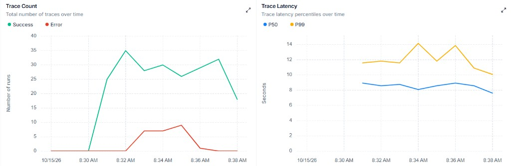
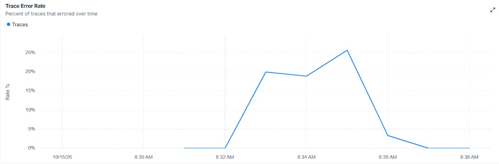
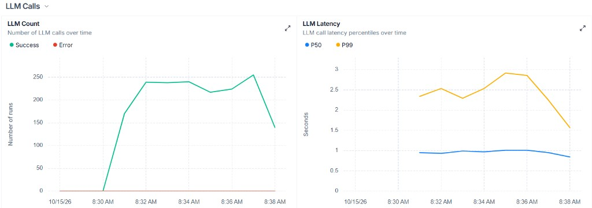
O tempo total de resposta, no trace raiz, fica em 8–9 segundos na mediana e 10–14 segundos no P99. O pico do P99 (cerca de 14 s às 08:34) coincide com o custo e com a taxa de erro. Cada chamada de modelo, sozinha, leva cerca de 1 s na mediana.
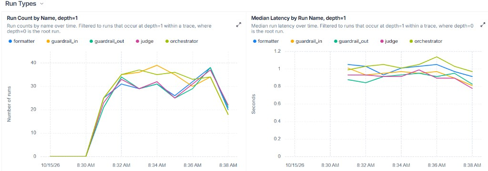
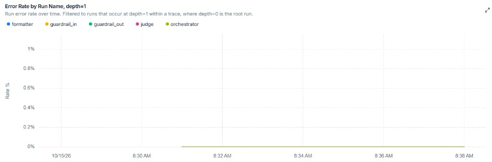
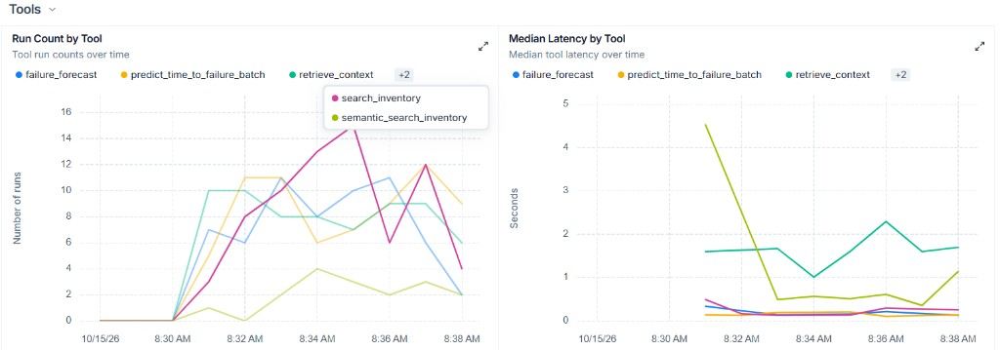
search_inventory chega a cerca de 15 execuções por minuto. retrieve_context (FAQ) fica em 1,5–2,2 s. predict_time_to_failure_batch começa perto de 4,5 s e depois cai.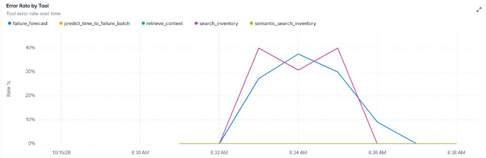
search_inventory e failure_forecast passam de 30% de erro entre 08:33 e 08:35. As outras tools ficam em zero.O tempo total não é um agente lento. É a soma do caminho (dois guardrails, orquestrador, especialista, formatter e judge, cada um perto de 1 s) mais a tool. Os agentes não registram erro. No gráfico de tools, search_inventory e failure_forecast passam de 30% entre 08:33 e 08:35. Desses dois, só o 429 de search_inventory produz os 24 HTTP 500. FAQ (retrieve_context) fica em zero.
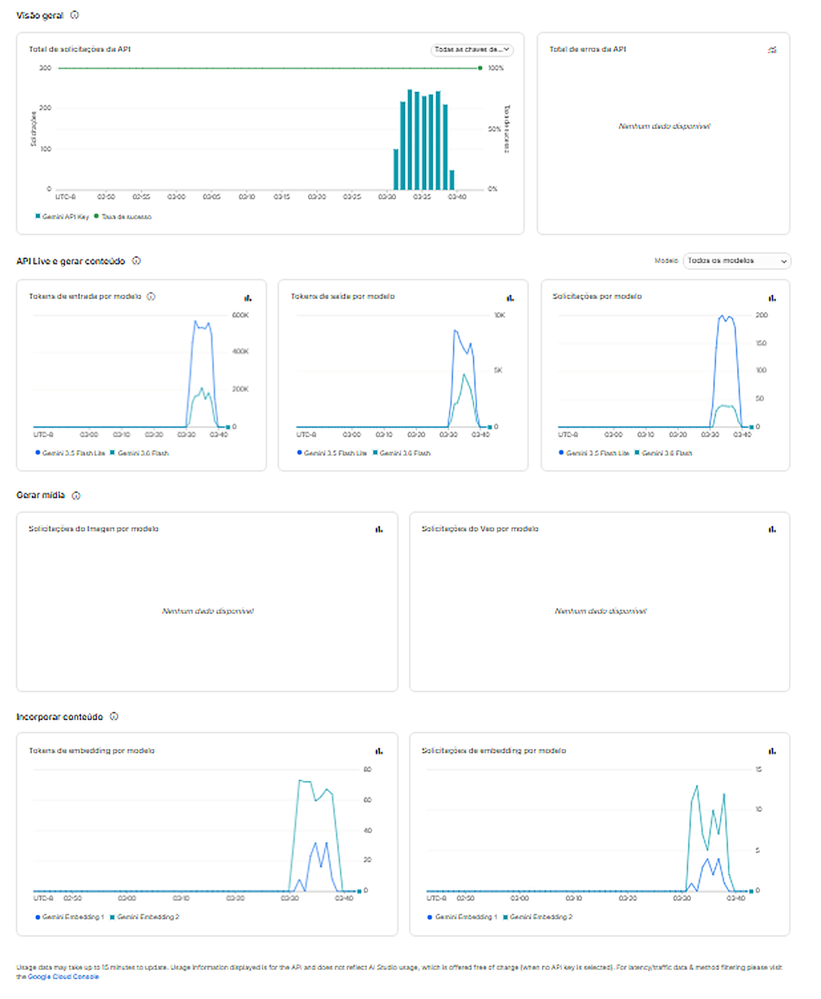
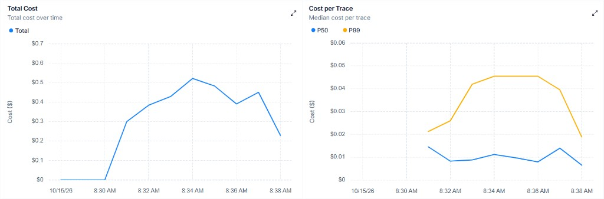
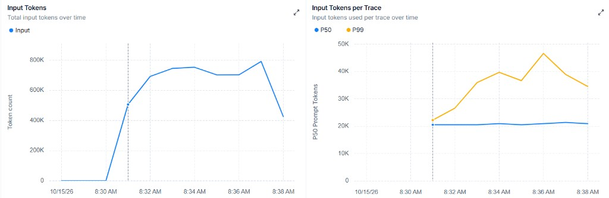
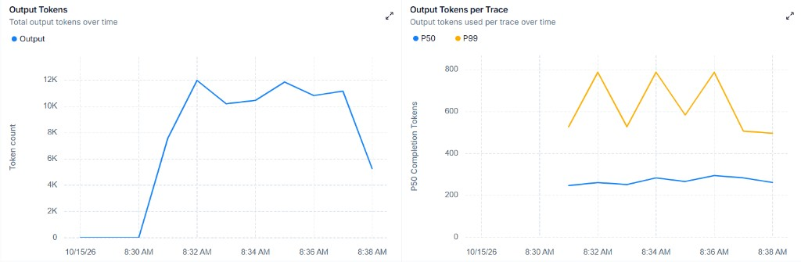
| Sinal | Leitura do gráfico |
|---|---|
| Traces com sucesso | pico de cerca de 35 por minuto |
| Chamadas de LLM | cerca de 240 por minuto, erro zero |
| Tokens de entrada | até ~780 mil/min; ~20 mil por trace na mediana |
| Tokens de saída | até ~12 mil/min; ~280 por trace na mediana |
| Custo total | cerca de US$ 0,30 a US$ 0,52 por minuto |
| Custo por trace | mediana ~US$ 0,01; P99 ~US$ 0,045 |
| Chamadas Gemini (AI Studio) | pico ~220/min no Flash-Lite e ~30/min no Flash |
| Erros da API Gemini | nenhum na janela |
Flash-Lite é o modelo dos guardrails, do orquestrador, do relatório, do formatter e do judge. Flash aparece menos porque só FAQ e inventário usam o modelo maior. A mediana de 20 mil tokens de entrada por trace é o prompt desses agentes mais o histórico curto da conversa. O P99 de 46 mil é o turno em que o contexto cresce.
O que foi debitado nesta carga, com os 100 usuários, foi US$ 0,17. O eixo de dólar do LangSmith não é essa fatura.
Os dois veem os mesmos tokens. O preço, não. O LangSmith não consulta o billing do Google. Ele pega a contagem de tokens do trace e multiplica por uma tabela de preço que ele mesmo guarda, escolhida pelo nome do modelo (gemini-3.5-flash e gemini-3.5-flash-lite). Se esse nome não está na tabela, entra o preço de um modelo parecido que ele já conhece.
A mediana de cerca de US$ 0,01 por trace, com ~20 mil tokens de entrada, dá cerca de US$ 0,50 por milhão de tokens. Isso é a ordem da tabela publicada do Flash da geração anterior (cerca de US$ 0,30 por milhão na entrada). Vezes as ~220 resoluções, o painel sugere mais de US$ 2 na janela. A soma visual do custo por minuto passa de US$ 3. As duas leituras do LangSmith combinam entre si. Nenhuma das duas é o débito.
O Gemini cobrou US$ 0,17 pelos mesmos 100 usuários. Por resolução, US$ 0,000762. Pelos ~20 mil tokens de entrada da mediana, isso é cerca de US$ 0,04 por milhão de tokens, na ordem de dez vezes abaixo da tabela que o LangSmith aplicou. O AI Studio ainda avisa, no rodapé, que o gráfico de uso da API não é o extrato e pode atrasar vários minutos. O número que vale é o que foi debitado.
Daqui para baixo o dinheiro é o débito de US$ 0,17. O LangSmith continua valendo para latência, erro e volume de tokens.
A maior parte do token é entrada, e é isso que o fluxo multiagente precisa. Na mediana um trace lê cerca de 20 mil tokens e escreve 280: cada agente recebe o próprio prompt, e quem decide o rumo também recebe o histórico e o retorno da tool. A resposta que o usuário vê continua curta. No P99 a entrada sobe para cerca de 46 mil (2,3 vezes a mediana) e a saída para 500–780, quando a conversa e o payload da tool ficam mais longos. Esse volume é o custo de cada nó acertar o passo, não um desperdício de resposta.
| Mediana por trace | P99 por trace | Pico por minuto | |
|---|---|---|---|
| Entrada | ~20 mil | ~46 mil | ~780 mil |
| Saída | ~280 | 500–780 | ~12 mil |
| Chamadas de LLM | ~7 | ~7 | ~240 |
| Entrada por chamada | ~3 mil | ~6,5 mil | — |
| Saída por chamada | ~40 | ~70–110 | — |
Um turno que termina passa por guardrail de entrada, orquestrador, um especialista, formatter, judge e guardrail de saída. A mediana de ~7 chamadas de LLM não é um sétimo nó fixo: FAQ, inventário, relatório e predição são agentes com tool, então o mesmo nó chama o modelo de novo depois que a tool volta. O judge pode devolver o turno ao orquestrador uma vez; no log desta carga isso foi raro (3 retries).
O modelo maior (gemini-3.5-flash) entra só na FAQ e no inventário. Guardrail de entrada e de saída, orquestrador, relatório, predição, formatter e judge usam gemini-3.5-flash-lite. Relatório e predição não são Flash. Se o orquestrador manda o inventário só para completar um pedido de predição, o inventário cola a resposta em current_request e o grafo segue para a predição antes do formatter: aí são dois especialistas no mesmo turno.
Cada agente recebe o próprio prompt de sistema e uma única mensagem humana. O histórico não vai como lista de mensagens do chat. O orquestrador, a FAQ, o inventário, o relatório e a predição recebem o texto dos turnos anteriores (humano e assistente, sem a mensagem deste turno) mais as preferências, dentro dessa mensagem. O guardrail de entrada vê só a mensagem atual, já com PII mascarada. O formatter recebe um JSON com a resposta do especialista (texto, fontes, HTML do relatório, predições ou resposta de inventário), as preferências e o mesmo histórico em texto: é aqui que o retorno da tool é relido. O judge recebe só o pedido atual e a resposta formatada, sem histórico. O guardrail de saída recebe só a resposta formatada.
No AI Studio, no pico, o Flash-Lite faz cerca de 220 chamadas por minuto e o Flash cerca de 30. Perto de 88% das chamadas são o modelo barato, o que bate com o grafo: cinco ou seis nós em Lite, e Flash só quando o especialista é FAQ ou inventário. Trinta chamadas Flash para cerca de 35 traces nesse minuto quer dizer que a maior parte dos turnos caiu num desses dois, com no máximo uma segunda chamada Flash quando a tool do próprio agente continua. A saída não muda essa conta: 12 mil tokens de saída por minuto contra 780 mil de entrada.
Em volume, 20 turnos por usuário por semana e a mediana desta carga (20 mil de entrada e 280 de saída) são a demanda. A cota da empresa, ainda não implementada, corta isso antes: 500 resoluções por mês no Profissional (cerca de 115 por semana) e 2.000 por mês no Empresarial (cerca de 462 por semana). Passou da cota, o modelo não é chamado, a menos que a empresa compre avulso.
| Entrada / semana | Saída / semana | |
|---|---|---|
| Demanda, 100 usuários | ~40 milhões | ~560 mil |
| Demanda, 1.000 usuários | ~400 milhões | ~5,6 milhões |
| O que a cota Profissional deixa passar | ~2,3 milhões | ~32 mil |
| O que a cota Empresarial deixa passar | ~9,2 milhões | ~129 mil |
As duas últimas linhas não mudam de 100 para 1.000 usuários: a cota é da empresa. Dentro dela, o orquestrador, os especialistas e o formatter seguem recebendo o histórico, que é o que mantém o turno coerente com a conversa. O judge e os dois guardrails não precisam desse histórico: um confere o pedido contra a resposta já formatada, os outros olham só a mensagem da vez.
Resolução, neste teste, é um turno HTTP 200: o grafo terminou e devolveu resposta. Foram 223 resoluções em 247 tentativas.
US$ 0,17 dividido pelas 223 resoluções dos 100 usuários dá US$ 0,000762 por resolução. Dividido pelas 247 tentativas, US$ 0,000688. O gráfico do LangSmith continua útil para ver forma (pico às 08:34, P99 mais caro que a mediana), não para o valor em dólares.
O teste não é uma semana de uso. Foram 100 usuários em cinco minutos de conversa (o log cobre 08:31–08:38), com no máximo cinco conversas ao mesmo tempo, e o débito foi US$ 0,17. Nessa janela cada usuário concluiu cerca de 2,2 turnos. A demanda abaixo é outra hipótese: 20 turnos concluídos por usuário por semana. Isso não é o que a empresa pode gastar. A cota de crédito, ainda não implementada, é da empresa inteira: 500 resoluções por mês no Profissional e 2.000 por mês no Empresarial. O Free não tem cota.
| 100 usuários | 1.000 usuários | |
|---|---|---|
| Demanda, 20 turnos/semana | 2.000/semana, 8.667/mês | 20.000/semana, 86.670/mês |
| Gemini dessa demanda, sem teto | US$ 1,52/semana | US$ 15,24/semana |
| Cota Profissional | 500/mês | 500/mês |
| Gemini que fica no plano | R$ 1,93/mês | R$ 1,93/mês |
| Fora da cota Profissional | 8.167/mês | 86.170/mês |
| Cota Empresarial | 2.000/mês | 2.000/mês |
| Gemini que fica no plano | R$ 7,70/mês (R$ 92,40/ano) | R$ 7,70/mês (R$ 92,40/ano) |
| Fora da cota Empresarial | 6.667/mês | 84.670/mês |
O que passa da cota não entra no preço do plano: ou a empresa para, ou compra o avulso a R$ 0,01 por resolução. O Gemini do plano não cresce de 100 para 1.000 usuários. Quem cresce é o excedente.
Essa conta é só o modelo, numa resolução HTTP 200. Infra não entra. Groq não entra (não houve fallback). O 429 também não: token gasto antes da falha não está nesses US$ 1,52. Se a semana tiver mais relatório e predição do que FAQ, o Flash cai e o custo por resolução desce, mas a cota continua em número de resoluções, não em dólar.
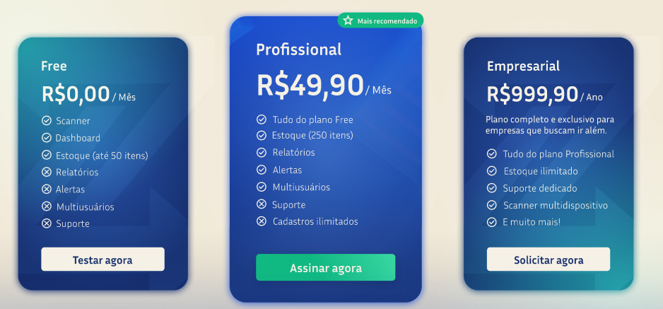
Free, Profissional e Empresarial são o preço do produto inteiro (scanner, estoque, relatórios, alertas, suporte). Não existe uma linha de receita só de IA, e o Free não inclui IA. O Profissional cobra por mês. O Empresarial cobra por ano. Não dá para tratar R$ 999,90/ano como uma mensalidade de R$ 83. No câmbio de 15/10/2026 (R$ 5,05), US$ 0,000762 vira R$ 0,00385 por resolução. A demanda segue 20 turnos por usuário por semana (86,67 por mês, 1.040 por ano). O Gemini que entra no preço do plano para na cota da empresa: 500 por mês no Profissional, 2.000 por mês no Empresarial. Abaixo da cota, o custo é a demanda. Acima, o plano paga só a cota.
| Plano | Preço | Usuários | Demanda / mês | Dentro da cota | Gemini no plano | Gemini / preço |
|---|---|---|---|---|---|---|
| Free | R$ 0 | — | não tem IA | 0 | R$ 0 | — |
| Profissional | R$ 49,90/mês | 1 | 87 | 87 | R$ 0,334/mês | 0,67% |
| Profissional | R$ 49,90/mês | 10 | 867 | 500 | R$ 1,93/mês | 3,9% |
| Profissional | R$ 49,90/mês | 30 | 2.600 | 500 | R$ 1,93/mês | 3,9% |
| Empresarial | R$ 999,90/ano | 10 | 867 | 867 | R$ 40/ano | 4% |
| Empresarial | R$ 999,90/ano | 30 | 2.600 | 2.000 | R$ 92,40/ano | 9,2% |
| Empresarial | R$ 999,90/ano | 100 | 8.667 | 2.000 | R$ 92,40/ano | 9,2% |
Um usuário no Profissional e dez no Empresarial ainda cabem na cota, então o plano paga a demanda. Nos outros casos a demanda passa da cota e o plano paga só ela: 3,9% no Profissional e 9,2% no Empresarial. Sem cota, trinta usuários no Profissional levariam 20,1% do mês e cem no Empresarial levariam 40% do ano.
No plano o retorno é o preço do produto. A margem é (preço − Gemini da cota ou da demanda, o que for menor) / preço. Infra não entra.
| Plano | Preço | Gemini no plano | Sobra | Margem |
|---|---|---|---|---|
| Profissional, 1 usuário | R$ 49,90/mês | R$ 0,334 | R$ 49,57 | 99,3% |
| Profissional, 10 ou 30 | R$ 49,90/mês | R$ 1,93 | R$ 47,97 | 96,1% |
| Empresarial, 10 | R$ 999,90/ano | R$ 40 | R$ 959,90 | 96,0% |
| Empresarial, 30 ou 100 | R$ 999,90/ano | R$ 92,40 | R$ 907,50 | 90,8% |
Isto não foi implementado. Não há crédito, teto nem cobrança de excedente no produto. O que segue é uma possibilidade, não um comportamento do sistema hoje.
Hoje o uso de IA não tem teto e não tem preço próprio. Uma forma de não deixar esse custo crescer dentro do plano seria um crédito por empresa, só nos planos que já têm IA. O Free continuaria sem IA. Um crédito seria uma resolução e custa R$ 0,00385 para nós. Cobrar R$ 0,04 daria ROI de 939% em cima de um custo de menos de meio centavo. Isso é margem de um preço alto, não retorno do plano. O avulso desta proposta fica em R$ 0,01, pouco mais que o dobro do modelo: o pacote de 1.000 sai R$ 10, contra R$ 3,85 de Gemini.
| Plano | IA | Créditos inclusos / mês | Custo Gemini da cota | Acima da cota |
|---|---|---|---|---|
| Free | não | 0 | R$ 0 | não se vende crédito; o caminho é o Profissional |
| Profissional | sim, dentro dos R$ 49,90 | 500 | R$ 1,93 (3,9% do plano) | R$ 0,01 por crédito, ou 1.000 por R$ 10 |
| Empresarial | sim, dentro dos R$ 999,90/ano | 2.000 por mês (24.000 no ano) | R$ 92,40/ano (9,2% de R$ 999,90) | o mesmo avulso |
O teto desta proposta, ainda não implementada, é que a cota inclusa custe no máximo 10% do preço do plano. Quinhentos créditos no Profissional ficam em 3,9%. Cinco mil por mês no Empresarial passariam de 20% do ano, então a cota desse plano fica em 2.000 por mês, 9,2% de R$ 999,90.
Nesse ritmo de 20 turnos por semana, a cota do Profissional cobre cerca de 6 usuários e a do Empresarial cerca de 23. Do usuário seguinte em diante, a resolução sai da cota e só continua se a empresa comprar avulso.
A cota inclusa não gera receita nova. Ela continua saindo do preço do produto. A margem dessa cota, na mesma conta dos planos, é o que sobra do preço depois do Gemini da cota:
| Plano | Preço | Gemini da cota | Sobra | Margem |
|---|---|---|---|---|
| Profissional, 500 créditos/mês | R$ 49,90/mês | R$ 1,93 | R$ 47,97 | 96,1% |
| Empresarial, 2.000/mês | R$ 999,90/ano | R$ 92,40/ano | R$ 907,50 | 90,8% |
O crédito avulso é outra conta. A receita é só o que a empresa paga a mais. A R$ 0,01, o ROI é (R$ 0,01 − R$ 0,00385) / R$ 0,00385 = 160%. De cada R$ 1 gasto no modelo, R$ 1,60 ficam de lucro. O preço cobre o Gemini e uma folga. Não é os 939% de cobrar R$ 0,04.
| Avulso | Receita | Gemini | Lucro | ROI |
|---|---|---|---|---|
| 1 crédito | R$ 0,01 | R$ 0,00385 | R$ 0,00615 | 160% |
| Pacote de 1.000 | R$ 10 | R$ 3,85 | R$ 6,15 | 160% |
A carga rodou em QA, com uma réplica de cada serviço (IA, inventário, predição, admin-core, Postgres, Redis). Cem usuários, no máximo cinco conversas ao mesmo tempo. Nove em cada dez turnos terminaram, em 8–9 segundos na mediana. O Gemini não errou. Os 24 HTTP 500 são o 429 do MCP de inventário. No LangSmith, a previsão de falha também sobe a taxa de erro da tool, mas isso não é esses 500. Esse 429 é limite da réplica única; subir o número de réplicas já alivia. O débito da janela foi US$ 0,17, US$ 0,000762 por resolução (R$ 0,00385 a R$ 5,05). Todo valor em dinheiro deste relatório é só o custo do modelo. Infra não entra: réplica, Postgres, Redis, Mongo, Qdrant, Kong e MCP ficam de fora, tanto na carga quanto na projeção e na margem dos planos. O Free não tem IA. Nos planos pagos o preço é do produto inteiro. A cota de créditos não foi implementada. Na proposta ela é da empresa, não por usuário: 500 resoluções por mês no Profissional e 2.000 por mês no Empresarial. Com 20 turnos por semana, um usuário no Profissional fica abaixo da cota (R$ 0,334, 0,67%). Dez ou trinta batem na cota e o plano paga R$ 1,93 (3,9%, sobram 96,1%). Dez usuários no Empresarial ainda cabem (R$ 40 no ano, 4%). Trinta ou cem batem na cota e o plano paga R$ 92,40 no ano (9,2%, sobram 90,8%). Sem essa cota, 30 usuários levariam 20,1% dos R$ 49,90 e 100 levariam 40% dos R$ 999,90. O que passar da cota para ou sai a R$ 0,04 por crédito, a R$ 0,01 por crédito, com ROI de 160% sobre o custo do Gemini, também sem infra.